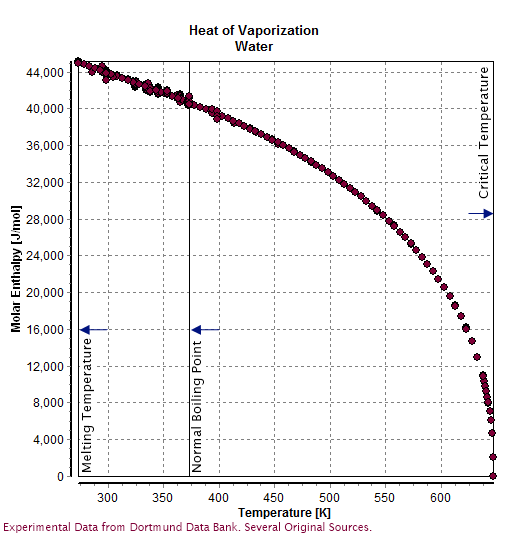

Water (H2O) is a polar inorganic compound that is at room temperature a tasteless and odorless liquid, which is nearly colorless apart from an inherent hint of blue It is by far the most studied chemical compound[19] and is described as the "universal solvent"[20] and the "solvent of life".[21] It is the most abundant substance on the surface of Earth[22] and the only common substance to exist as a solid, liquid, and gas on Earth's surface.[23] It is also the third most abundant molecule in the universe (behind molecular hydrogen and carbon monoxide).[22] Water molecules form hydrogen bonds with each other and are strongly polar. This polarity allows it to dissociate ions in salts and bond to other polar substances such as alcohols and acids, thus dissolving them. Its hydrogen bonding causes its many unique properties, such as having a solid form less dense than its liquid form,[c] a relatively high boiling point of 100 °C for its molar mass, and a high heat capacity. Water is amphoteric, meaning that it can exhibit properties of an acid or a base, depending on the pH of the solution that it is in; it readily produces both H+ and OH− ions.[c] Related to its amphoteric character, it undergoes self-ionization. The product of the activities, or approximately, the concentrations of H+ and OH− is a constant, so their respective concentrations are inversely proportional to each other.[24]
Water is the chemical substance with chemical formula H 2O; one molecule of water has two hydrogen atoms covalently bonded to a single oxygen atom.[25] Water is a tasteless, odorless liquid at ambient temperature and pressure. Liquid water has weak absorption bands at wavelengths of around 750 nm which cause it to appear to have a blue colour.[3] This can easily be observed in a water-filled bath or wash-basin whose lining is white. Large ice crystals, as in glaciers, also appear blue. Under standard conditions, water is primarily a liquid, unlike other analogous hydrides of the oxygen family, which are generally gaseous. This unique property of water is due to hydrogen bonding. The molecules of water are constantly moving concerning each other, and the hydrogen bonds are continually breaking and reforming at timescales faster than 200 femtoseconds (2 × 10−13 seconds).[26] However, these bonds are strong enough to create many of the peculiar properties of water, some of which make it integral to life. Water, ice, and vapour Within the Earth's atmosphere and surface, the liquid phase is the most common and is the formthat is generally denoted by the word "water". The solid phase of water is known as ice and commonly takes the structure of hard, amalgamated crystals, such as ice cubes, or loosely accumulated granular crystals, like snow. Aside from common hexagonal crystalline ice, other crystalline and amorphous phases of ice are known. The gaseous phase of water is known as water vapor (or steam). Visible steam and clouds are formed from minute droplets of water suspended in the air. Water also forms a supercritical fluid. The critical temperature is 647 K and the critical pressure is 22.064 MPa. In nature, this only rarely occurs in extremely hostile conditions. A likely example of naturally occurring supercritical water is in the hottest parts of deep water hydrothermal vents, in which water is heated to the critical temperature by volcanic plumes and the critical pressure is caused by the weight of the ocean at the extreme depths where the vents are located. This pressure is reached at a depth of about 2200 meters: much less than the mean depth of the ocean (3800 meters).[27]
Water has a very high specific heat capacity of 4184 J/(kg·K) at 20 °C (4182 J/(kg·K) at 25 °C) —the second-highest among all the heteroatomic species (after ammonia), as well as a high heat of vaporization (40.65 kJ/mol or 2257 kJ/kg at the normal boiling point), both of which are a result of the extensive hydrogen bonding between its molecules. These two unusual properties allow water to moderate Earth's climate by buffering large fluctuations in temperature. Most of the additional energy stored in the climate system since 1970 has accumulated in the oceans.[28] The specific enthalpy of fusion (more commonly known as latent heat) of water is 333.55 kJ/kg at 0 °C: the same amount of energy is required to melt ice as to warm ice from −160 °C up to its melting point or to heat the same amount of water by about 80 °C. Of common substances, only that of ammonia is higher. This property confers resistance to melting on the ice of glaciers and drift ice. Before and since the advent of mechanical refrigeration, ice was and still is in common use for retarding food spoilage. The specific heat capacity of ice at −10 °C is 2030 J/(kg·K)[29] and the heat capacity of steam at 100 °C is 2080 J/(kg·K)
